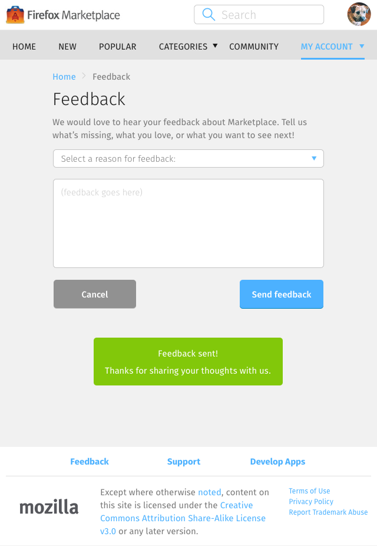

<div class="container">
	<div class="row">
		<div class="col-sm-12 col-md-12 col-lg-12">
			<h1>My Account &rarr; Feedback</h1>
			
			<p class="longText">The feedback page provides a way to submit comment to the Marketplace team. This page contains:</p>
			
			<ol class="longText">
  			<li>Reason for feedback:
    			<ul>
    			  <li>Inappropriate content (copyright infringement, inappropriate content, etc.)</li>
    			  <li>Problem with the website</li>
    			  <li>Other problems</li>
    			</ul>
  			</li>
  			<li>Editable fields:
    			  <ul>
    			    <li>Avatar</li>
    			    <li>Display name</li>
    			    <li>Location</li>
    			    <li>About you</li>
    			    <li>Receive updates and announcements about Marketplace</li>
    			  </ul>
  			</li>
			</ol>
			  
		  <h3 class="specItem">Mobile</h3>
		  
		  
		  
      <p class="longText">To access the page, select the Settings icon on the navigation bar, scroll to the right, and select Feedback. Feedback is the third menu item on the list.</p>
		  
		  <h3 class="specItem">Tablet</h3>
		  
		  
		  
      <p class="longText">To access the page, expand the My Accounts navigation menu item, then select Feedback.</p>
      
      <h3 class="specItem">Desktop</h3>
      
		  
		  
      <p class="longText">Similar to the Tablet layout, the interface can be accessed by expanding the My Accounts navigation menu item, then selecting Feedback.</p>
      
      <p class="longText">However, the interface is not its own page. It’s a non-modal dialogue that sits on top of whatever page gets opened at the time.</p>
      
      <p class="longText warning">This behaviour is different from tablet and mobile layouts, where feedback gets its own page. We should consider making the desktop layout consistent.</p>

		</div>
	</div>
	<!-- Pagination. If you have more than one page, set the multipage variable in the Frontmatter to true. Editing the pagination code happens in /_includes/homePagination.html.
		NOTE: This is currently broken in the Jekyll ver of this template.
		-->
		{% if page.multipage %}
			{% include homePagination.html %}
		{% endif %}
